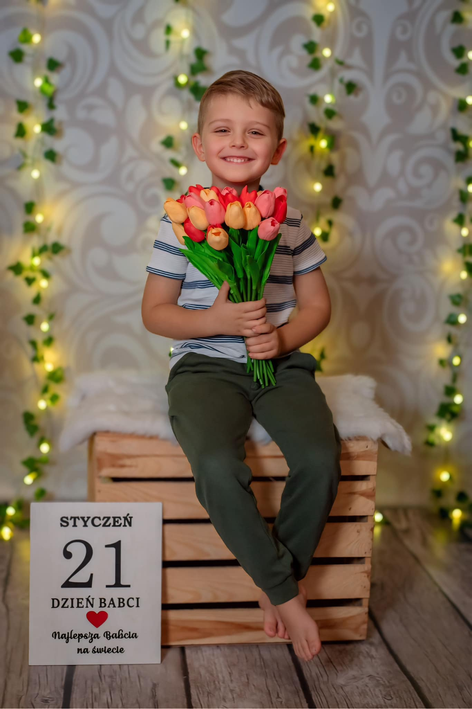
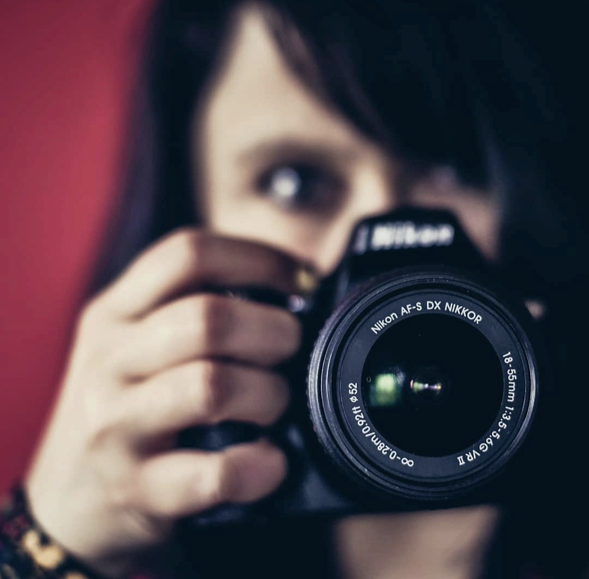
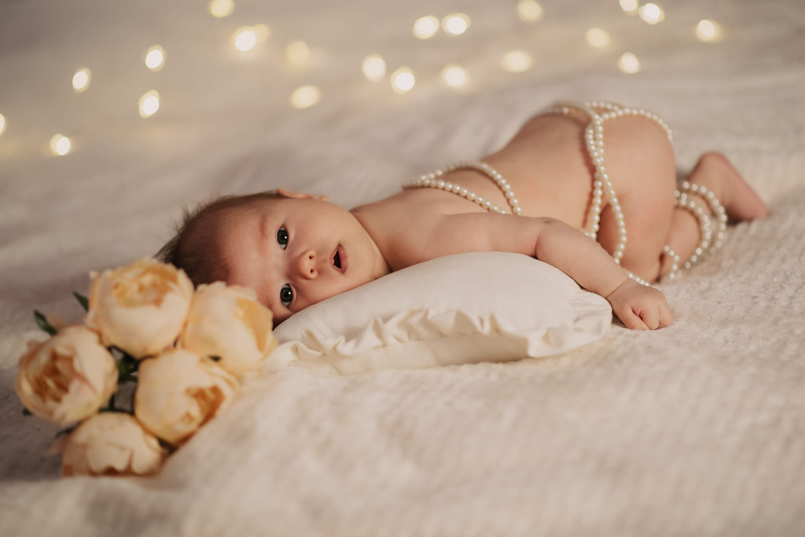
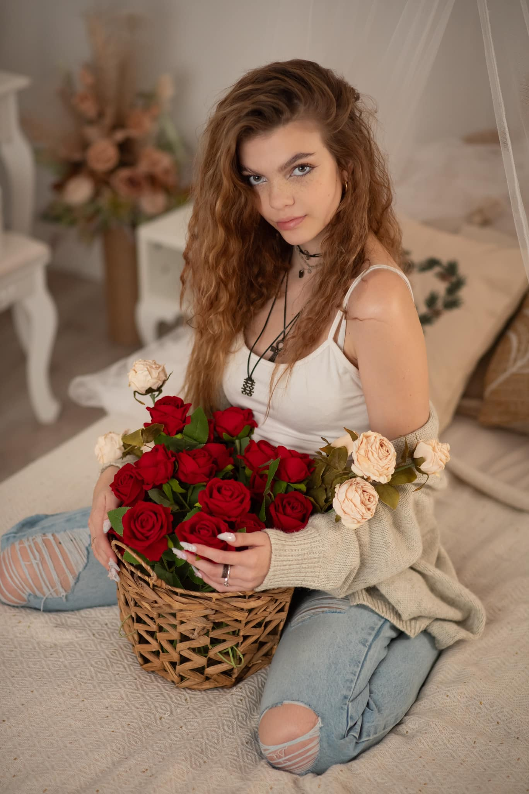
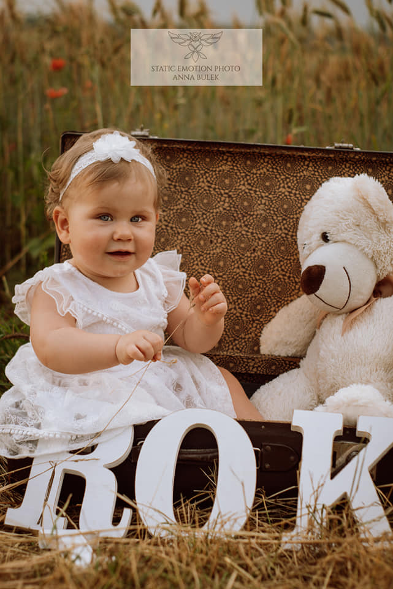

Chwile rodzinne
Ciepłe, autentyczne kadry pełne bliskości, czułości i wspólnych emocji.
Ponadczasowa fotografia
Tworzę fotografie pełne naturalności, bliskości i delikatnych detali, aby zatrzymać najważniejsze chwile w eleganckiej i ponadczasowej formie.


Za obiektywem
W mojej pracy najważniejsze są autentyczność, delikatność i piękno naturalnych relacji. Każda sesja powstaje w spokojnej atmosferze, z uważnością na emocje, detale i wyjątkowy klimat chwili.
Moim celem jest tworzenie nie tylko pięknych zdjęć, ale wspomnień, do których będziecie wracać z czułością przez długie lata.
Poznaj więcejDoświadczenie
Każde spotkanie to spokojna, indywidualna przestrzeń, w której możesz po prostu być sobą, a najpiękniejsze momenty dzieją się naturalnie.
Ciepłe, autentyczne kadry pełne bliskości, czułości i wspólnych emocji.
Subtelne fotografie zatrzymujące piękno najwcześniejszych lat i wyjątkowych więzi.
Eleganckie sesje podkreślające kobiecość, delikatność i indywidualny charakter.
Najważniejsze momenty uchwycone z wyczuciem, estetyką i ponadczasowym stylem.
Wybrane kadry



Indywidualne podejście
Każda fotografia powstaje z dbałością o atmosferę, emocje i naturalne piękno chwili, aby Wasze wspomnienia mogły zostać z Wami w najbardziej autentycznej formie.
Stwórzmy razem coś pięknego
Niezależnie od tego, czy chcesz zatrzymać rodzinne chwile, kobiecą delikatność, macierzyństwo czy wyjątkowe wydarzenie — stwórzmy razem kadry, które pozostaną z Tobą na zawsze.
Zapytaj o swoją sesję